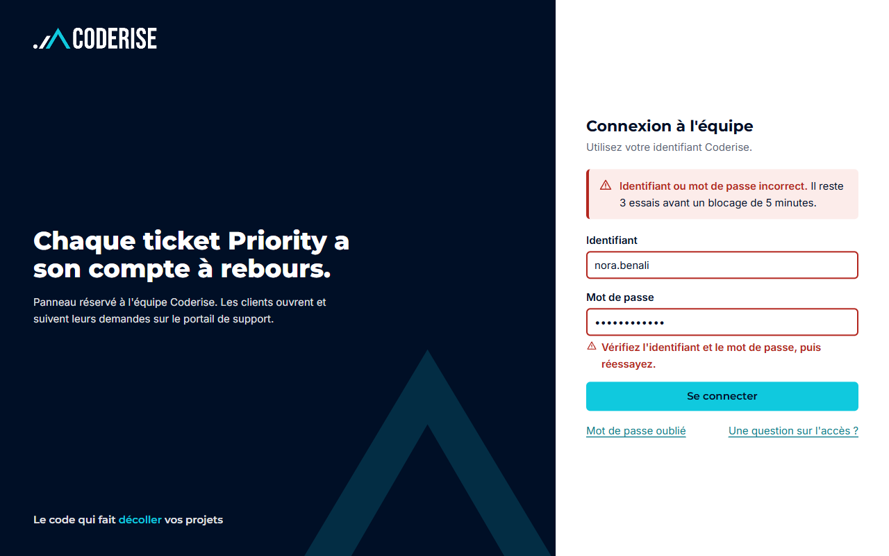
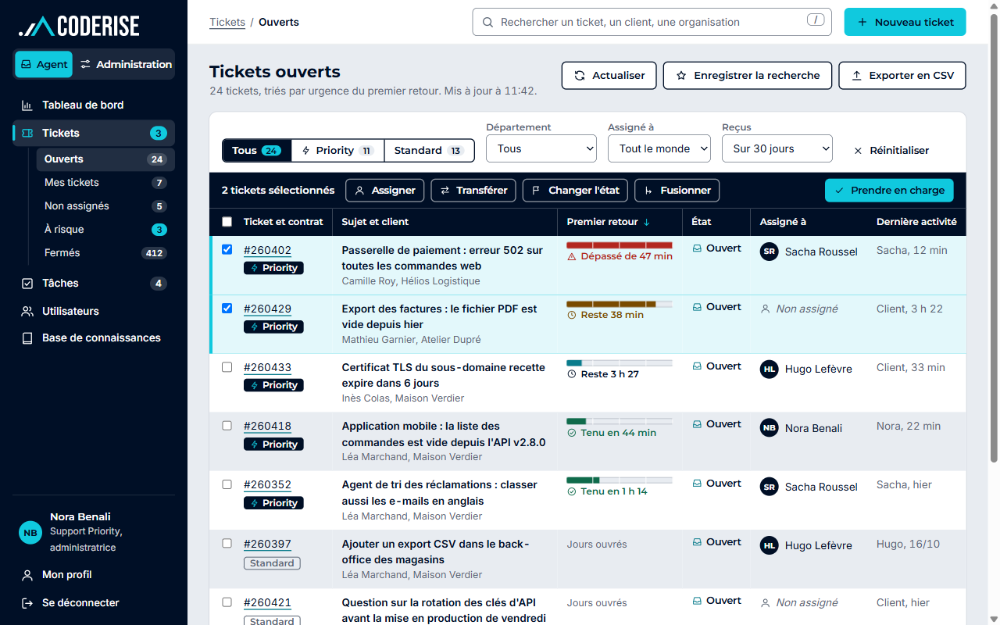
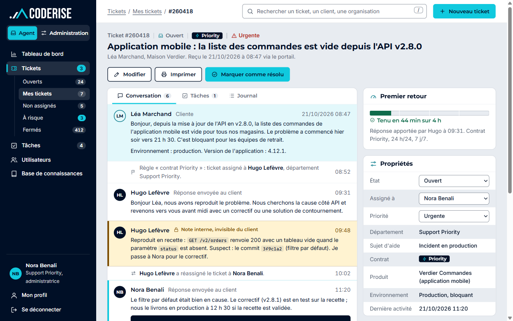
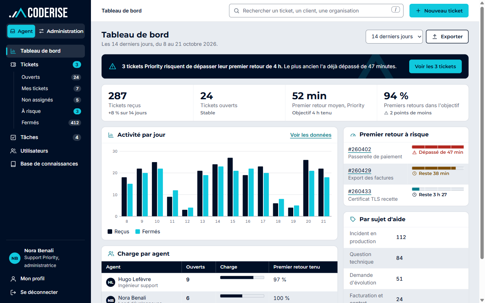
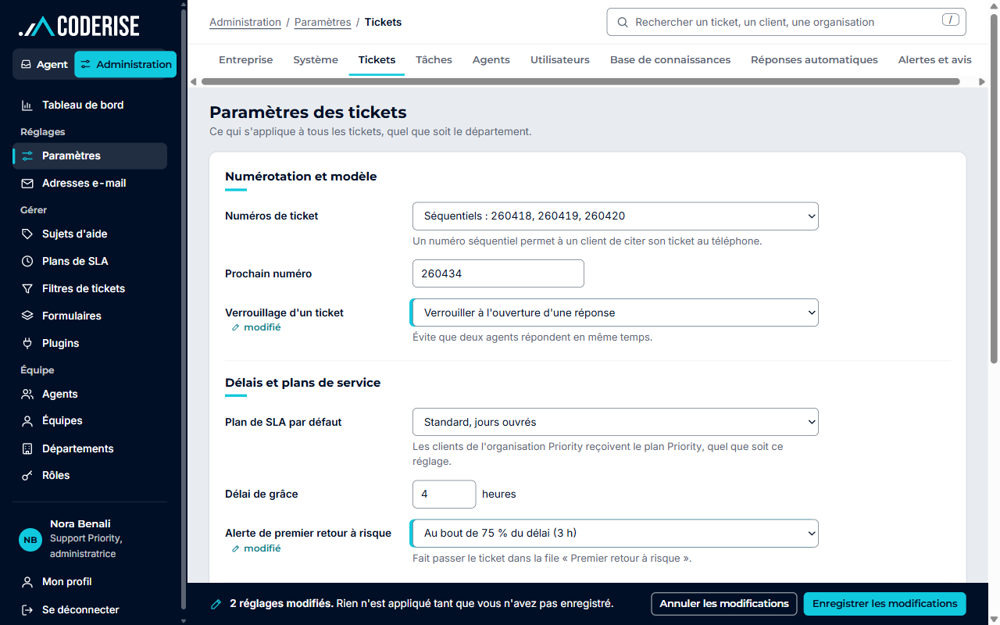
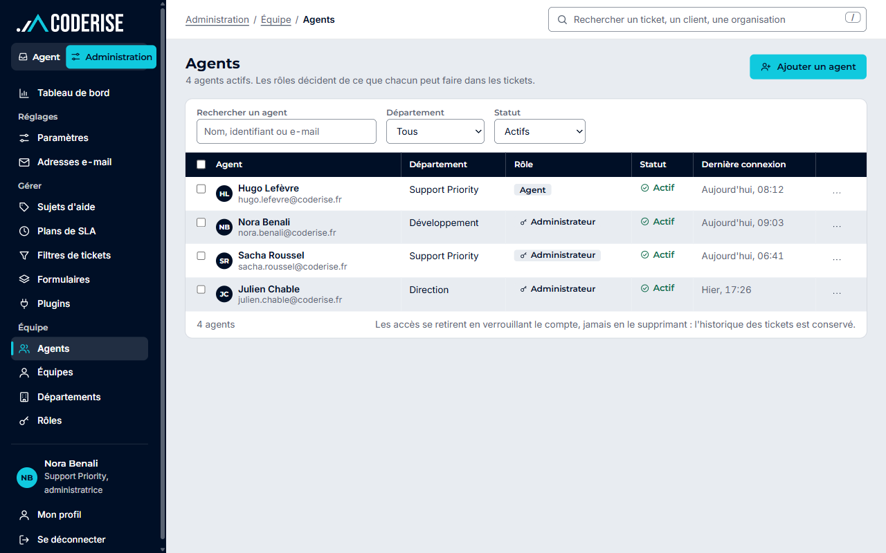

Connexion
Écran partagé : le compte à rebours Priority en accroche, formulaire et erreur à droite.

File de tickets
Tri par urgence du premier retour, jauge à repères, actions groupées sur la sélection.

Fiche ticket
Conversation, note interne teintée, réponse en deux modes, panneau de propriétés collant.

Tableau de bord
Bandeau « à risque », chiffres du jour, activité sur 14 jours, charge par agent.

Administration : paramètres
Réglages en libellés à gauche, champs modifiés repérés, barre d'enregistrement collée.

Administration : agents
Liste serrée avec rôle et statut, retrait d'accès par verrouillage.
Ce que cette maquette change par rapport au poste de travail du portail
- L'espace de travail (Agent ou Administration) est choisi en haut du rail, toujours visible : on sait où l'on est avant d'agir.
- Le délai de premier retour du contrat Priority devient la colonne qui organise la file, avec une jauge dont l'état se lit aussi dans le texte.
- La note interne a sa propre couleur, dans le fil et dans la zone de saisie, pour qu'on ne l'envoie pas au client par erreur.
- Les réglages modifiés sont repérés dans le formulaire, et une barre collée en bas garde les boutons d'enregistrement à portée.